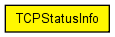
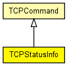

Sent with message kind TCP_I_STATUS, in response to command TCP_C_STATUS. For explanation of variables, see RFC 793 or TCPStateVariables in TCPConnection.h.
See also: TcpStatusInd, TcpCommandCode, TCP
The following diagram shows usage relationships between types. Unresolved types are missing from the diagram. Click here to see the full picture.
The following diagram shows inheritance relationships for this type. Unresolved types are missing from the diagram. Click here to see the full picture.
| TCPCommand (class) |
Control info for TCP connections. This class is to be set as control info (see cMessage::setControlInfo()) on all messages exchanged between TCP and application, in both directions. Some commands and indications (TCP_C_OPEN_xxx, TCP_I_STATUS) use subclasses. |
| Name | Type | Description |
|---|---|---|
| connId | int |
identifies the socket within the application |
| snd_up | unsigned int | |
| irs | unsigned int | |
| snd_max | unsigned int | |
| state | int | |
| iss | unsigned int | |
| fin_ack_rcvd | bool | |
| snd_wl2 | unsigned int | |
| snd_wl1 | unsigned int | |
| rcv_nxt | unsigned int | |
| snd_wnd | unsigned int | |
| snd_mss | unsigned int | |
| userId | int |
id than can be freely used by the app |
| stateName | string | |
| snd_nxt | unsigned int | |
| rcv_wnd | unsigned int | |
| snd_una | unsigned int | |
| remotePort | int | |
| localPort | int | |
| rcv_up | unsigned int | |
| localAddr | IPvXAddress | |
| remoteAddr | IPvXAddress |
// // Sent with message kind TCP_I_STATUS, in response to command TCP_C_STATUS. // For explanation of variables, see RFC 793 or TCPStateVariables in // TCPConnection.h. // // @see TcpStatusInd, TcpCommandCode, TCP // class TCPStatusInfo extends TCPCommand { int state; string stateName; IPvXAddress localAddr; IPvXAddress remoteAddr; int localPort; int remotePort; unsigned int snd_mss; unsigned int snd_una; unsigned int snd_nxt; unsigned int snd_max; unsigned int snd_wnd; unsigned int snd_up; unsigned int snd_wl1; unsigned int snd_wl2; unsigned int iss; unsigned int rcv_nxt; unsigned int rcv_wnd; unsigned int rcv_up; unsigned int irs; bool fin_ack_rcvd; }